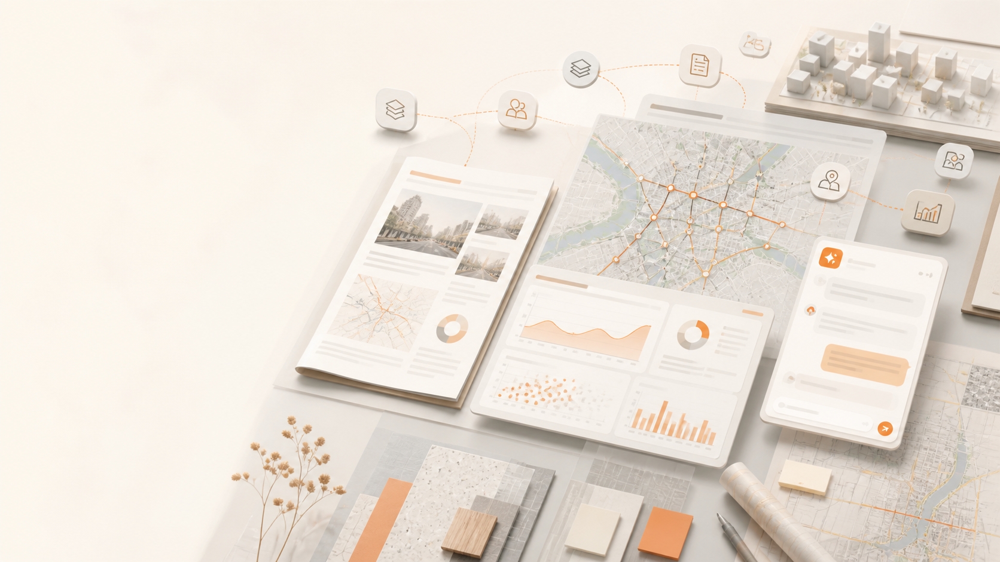
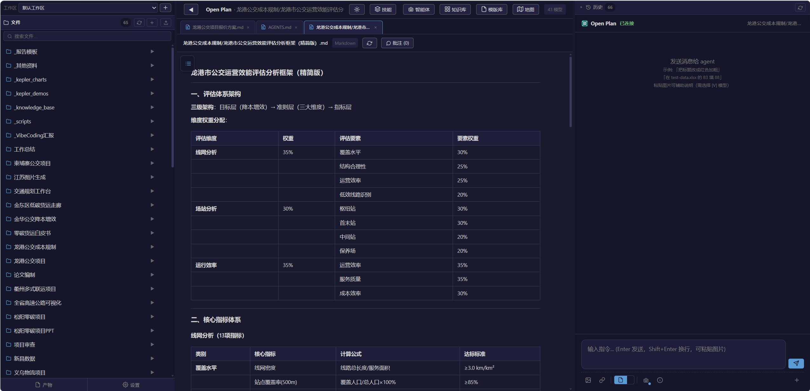
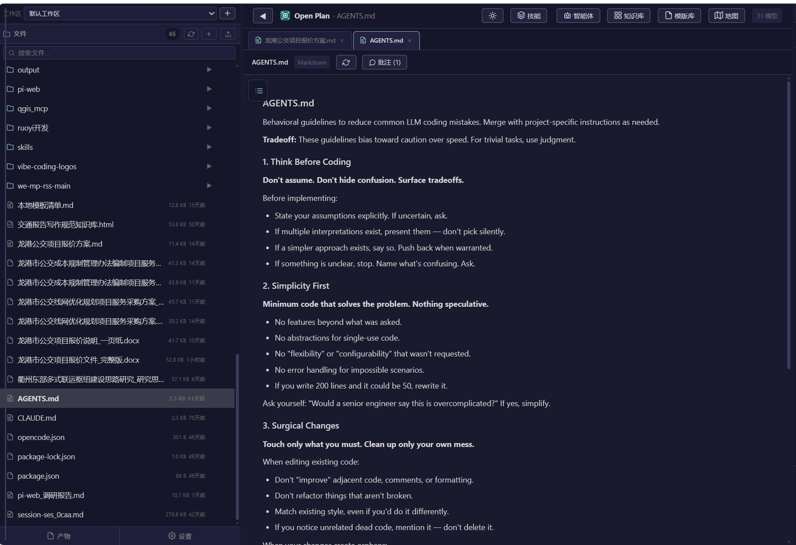

把规划工作
聚到一起
一个连接资料、知识、技能、地图与成果的完整工作空间。
这不是功能清单，而是一条完整的工作叙事
从“为什么做”出发，走到“怎么用、怎么扩展、为什么值得继续建设”。
建议讲述节奏：问题 25% · 方案 20% · 功能 45% · 价值 10%。
把人工经验，变成可调用的规划能力
规划的核心价值不只在工具，更在知识。让沉睡在工程师电脑里的资料被看见、被理解、被复用，才能持续提升交付质量。
让资料被看见
把分散的文本、规范和历史项目纳入统一入口，AI 能快速找到需要的内容。
让经验被复用
通过标签、关联、模板和工作流，把个人经验变成团队可以调用的能力。
让交付更稳定
让 Agent 在正确的知识和规范基础上工作，减少遗漏，提升内容质量与一致性。
 资料 · 知识 · 规划成果
资料 · 知识 · 规划成果规划真正的价值，沉淀在知识库里
首要解决的问题：如何构建知识库，以及如何让知识真正被 Agent 运用起来。
把规范要求，蒸馏成 Agent 能理解的标准
规划文本的结构、格式和表达要求高度清晰。我们总结大量规划文本，把可复用的经验沉淀成 Agent 能执行的内容标准。
先知道写什么
章节结构、内容顺序和成果边界。
再知道怎么写
沉淀不同规划类型的可复用骨架。
保证交付规范
标题层级、版式、表格和图文关系。
细到表达习惯
让文字更符合规划文本的专业语气。
 原始文本 → 规范框架 → 可复用模板
原始文本 → 规范框架 → 可复用模板接入现有生态，把规划工作串成一条线
规聚不要求替换已有工具，可以和院里的 AVA 平台、市面上的 WorkBuddy、Trae 等工具结合，成为规划工程师的一站式工作台。

报告 · 地图 · 数据 · Agent目标不是增加一个孤立入口，而是让资料、规则、技能和成果在同一个任务里流动起来。
因为规划工作
本质上是一个复杂协作系统
它同时包含资料整理、规范遵循、专业分析、地图制图、报告写作、反复修改和成果交付。单个工具能解决一个环节，但很难承载完整过程。
资料很多
文件、表格、图层、历史项目和参考模板持续增加。
规则很多
行业规范、项目要求和个人工作习惯需要同时满足。
成果很多
最后要落到文档、图表、地图和可交付文件上。
真正耗时的，往往不是分析本身
而是找到资料、理解背景、反复搬运、检查格式，以及在多个工具之间保持一致。
资料分散
Word、Excel、PPT、地图和历史文件分散在不同目录与软件中，当前上下文很容易丢失。
知识难找
规范、模板和项目经验没有形成统一的检索与关联方式，很多信息依赖个人记忆。
重复劳动
同一份内容需要在文档、表格、图表、地图和汇报材料之间多次复制和调整。
成果难追踪
AI 的回答、工具的修改、最终文件和项目经验之间缺少连续的记录和恢复机制。
所以我们需要的不是又一个孤立工具，而是一个承载完整任务上下文的工作台。
把“找资料、做分析、出成果”放进同一个闭环
工作台
视频位：用一段总览录屏展示四类输入如何汇聚到同一个任务中。
一个主工作台，连接四个专业空间

一张界面，串起六个模块
用户可以在同一个任务里，从文件切换到知识库、地图和模板，不丢失上下文。
一次任务，经过六个连续步骤
关键是让每一步都能被理解、被调用、被恢复。
视频位：录制一次“引用模板和当前文件 → Agent 生成/修改成果”的全过程。
AI 不只回答问题，也能进入工作现场
讲解重点：它把“会聊天”升级为“能围绕项目完成任务”。
从打开文件，到直接形成成果
演示建议：打开一份报告，问 Agent“当前文件有哪些章节缺失？”
把“怎么写、怎么排、怎么做”提前准备好
规范库提供结构和方法，模板库提供可以直接参考的成果样式。
视频位：模板筛选 → 预览 → @模板 → Agent 生成成果。
从“我记得有一篇”，变成“它就在这里”
也支持 IMA 云端知识库，形成“本地资料 + 云端资料”的统一入口。
把一次性提示词，沉淀成长期可复用的能力
技能分类
技能管理支持搜索、分类、@调用、导入和导出。办公模式和开发模式可以使用不同的技能组合。
视频位：技能广场分类 → 搜索 → 调用 → 返回对话。
从“会用技能”，到“一键启动专业流程”
规划报告全流程
从调研到成稿，再到图表和 PDF 输出。
OD 数据分析工作台
导入、校验、统计、可视化和报告汇总。
公交规划专项
现状分析、方案、配图和汇报材料。
汇报材料速成
简报、PPT、配图和演示结构一次组织。
工作流把多个 Skills、角色要求和执行顺序组合起来，降低重复配置成本。
把通用 Agent 变成不同岗位的工作伙伴
公文报告编制助手
按公文版面规范撰写、修订和输出规范 docx。
公文 · 规划 · 汇报地图可视化助手
生成 OD 期望线、站点、热力和等时圈等专题地图。
地图 · OD · 专题图文本审查助手
检查错别字、语病、格式、术语和逻辑结构。
审校 · 规范 · 建议数据分析及可视化助手
处理 Excel、OD 和客流数据，生成图表与分析结论。
数据 · 图表 · 结论让 Agent 知道“这个项目应该怎样工作”

规则 · 上下文 · 长期记忆平台因此能从“通用对话”逐步变成“懂项目的协作伙伴”。
地图不只是展示，而是分析和出图的工作台
 路网 · OD · 分析区 · 图层
路网 · OD · 分析区 · 图层地图能力把交通数据分析和规划成果表达放到了一起。
从基础地图，继续走向交通专题分析
M2 · 宏观交通分析
- 路网流量带宽图
- OD 期望线
- 区域交换量预览
- 路网结构统计
M3 · 公交分析仪表盘
- 公交线路图层与分级配色
- 站点热力
- 公交 OD
- 线路、站点、OD、统计子面板
把项目状态也纳入长期工作流
可恢复的工作状态
工作区、当前文件、会话、引用、打开的文档 Tab 和界面模式，都可以被持续保存和恢复。
这部分让平台从“功能集合”变成可以长期使用的项目操作系统。
前端是工作台，后端是控制面，Agent 是执行层
工作台
技术架构的核心，是让每种专业能力都能按照任务上下文被调用。
越做越快
越做越懂
规聚的价值，是把个人经验、项目规范、专业工具和 AI 执行能力，沉淀成一个可以持续复用的工作系统。